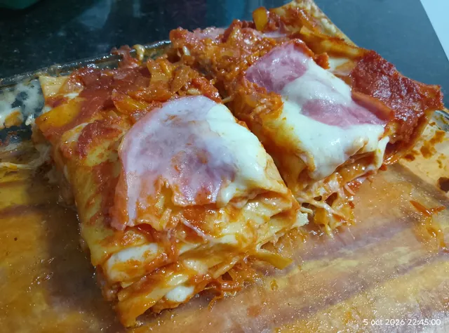

Lasaña de jamon, queso y berenjena

Descripcion
Una sabrosa lasaña preparada con capas de pasta, jamón, queso y berenjenas, combinadas para lograr una textura suave y un sabor delicioso. Una opción ideal para compartir y disfrutar de una comida casera diferente.
Ingredientes
- 1 paquete masa de lasaña prelista
- 300 g jamón feteado
- 300 g mozzarella
- 2 berenjenas grandes feteadas
- 1 cajita puré de tomate
- 1 cebolla cortada en cuadraditos
- 1 morrón rojo cortado en cuadraditos
- al gusto Sal y pimienta y orégano
Preparacion
-
Para empezar ponemos a remojar las láminas de masa de lasaña prelista en una fuente con agua por 5 o 10 minutos, mientras ponemos a precalentar el horno
- Por otro lado ponemos a preparar una salsa de tomate simple salteando primero la cebolla con el morrón y una vez caramelizados los ingredientes agregamos el puré de tomate el orégano y salpimentamos a gusto
-
Mientras se prepara la salsa en una plancha con una pincelada de aceite sobre la base vamos asando vuelta y vuelta las berenjenas feteadas, la segunda vuelta podemos salarla si es que preferimos... Íbamos preparando las fetas de mozzarella para ir armando nuestra lasaña
- Los siguientes simplemente es ir armando la torre...Jaj... Colocamos una capa de salsa luego la masa luego el queso después el jamón después la berenjena... Después la masa y así sucesivamente
- Terminamos con salsa y jamón y queso por arriba y le damos un golpe de horno para que se derrita toda la mozzarella... El resultado riquísimo
Home